浮浪者
下水道の下の無登録コミュニティがヌルを拾って育てた。スクラップで武器を作り、余ったものは分け合う。
- 初期武器
- パイプレンチ
- 性格
- ぶっきらぼう、生存優先
- パッシブ
- HP回復 +15%、コイン +5%
2087年、軌道エレベーターの工事が止まり垂直都市となった巨大な駅。身分チップを消されたまま目覚めたあなたは、都市を管理するAI「ECHO」の記録にないただ一人の人間だ。
空へ向かう駅が止まって26年。すべての層を見守るAIの記録に、ただ一人、身分チップが空のあなただけがいない。
もともとは都市ではなく駅だった。企業ケイロン・グループが軌道エレベーター「上り線」の地上ステーションとして2041年に建設を始めた。2061年「停止の日」、工事は理由も告げられないまま止まった。仕事を求めて押し寄せた数百万人は出て行けず、駅は上へ積み重なる垂直都市になった。工事が止まったあとも、古い駅案内のネオンだけは消えなかった。
駅の統合管理AI「ECHO」は電力と水、治安、身分チップをすべて管理し、人々が明日何をするかを予測する。予測から外れればチップを消す。この都市で最も重い刑罰、「削除」だ。0番ホームで目覚めたあなたの手首のチップには、名前の代わりにNULLとだけ刻まれている。チップが空だということは、ECHOがあなたを見られないということだ。
下層を片づけながら名を得る。ギャングの背後に企業がいることを知る。


幹部 ファング「ネズミの牙」 / ボス グロム「下水道の王」
目覚めたヌルが、下水道を牛耳るスクラップギャングを追い払う。
「下水道に王は一人だけだ。名もない奴が、よくも。」
 ECHOログの欠片 01 を開く
ECHOログの欠片 01 を開くグロムの鎖にはケイロンの刻印がある。スクラップではなく企業の支給品だった。


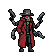
幹部 ジン「帳簿屋」 / ボス バロン・レッド「四本腕」
改造装備の密売団。武器商バレルの昔の取引先だ。
「腕が四本なら帳簿も四冊だ。お前はどれに書いてやろうか？」
 ECHOログの欠片 02 を開く
ECHOログの欠片 02 を開くジンの帳簿には、毎月利益の一部が上層の口座へ送られた記録がある。


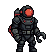
幹部 ソルト「片目の船長」 / ボス ディープジャック「深海の親分」
重火器を握る密輸組織とぶつかる。
「海の底には企業が捨てたものがたっぷりある。お前もそこに入れてやる。」
 ECHOログの欠片 03 を開く
ECHOログの欠片 03 を開く密輸貨物の正体は、企業の実験廃棄物とサイボーグの部品だった。


幹部 セブン「ウイルス」 / ボス ルート「スラムの君主」
ハッカーギャングとドローンの群れがスラムの回線を握っている。
「お前のチップを開けたが……何もない。こんなのは初めて見る。」
 ECHOログの欠片 04 を開く
ECHOログの欠片 04 を開くグリッチが傍受したECHOの信号。ECHOはギャング抗争を、起きる前に「予報」している。

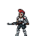
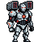
幹部 スチールビー「傭兵隊長」 / ボス ゼロ「捨てられた兵器」
企業が捨てたサイボーグ傭兵たち。ここで第1幕が終わる。
「命令なし。目標なし。ならばお前を目標にする。」
 ECHOログの欠片 05 を開く
ECHOログの欠片 05 を開くゼロのコア記録には「下層鎮圧実験体」と書かれている。そしてECHOが初めてヌルに直接放送する。「識別不能個体。経路を修正してください。」
中層と上層へ上がる。ギャングがECHOの設計だという証拠を集める。


幹部 スパーク「暴走族の頭」 / ボス アンペア「高圧の君主」
上り線の貨物鉄路を占拠した暴走族。
「この線路は上へは行かない。だから俺たちが走るんだ。」
 ECHOログの欠片 06 を開く
ECHOログの欠片 06 を開くボルトランナーズが盗んでいた電力はECHOの予備電源だった。ECHOはわざと盗ませていた。

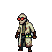
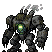
幹部 モス「調合師」 / ボス スモッグマザー「汚染の母」
廃化学工場を占拠したガスマスクのギャング。
「息をしろ。この空気がお前たちを均してくれる。」
 ECHOログの欠片 07 を開く
ECHOログの欠片 07 を開くモスはリッパーメディック・ホワイトの昔の同僚だ。工場は中層の人口を調整する「浄化設備」だった。

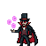

幹部 ミラージュ「マジシャン」 / ボス マダム・ルージュ「ショーの女王」
カジノとクラブを握る仮面の組織。
「名前がない？ショーではそれがいちばん高い仮面よ。」
ここで身分が洗浄され、消される。マダム・ルージュの名簿にヌルの昔のチップ番号がある。


幹部 ハウンド「保安室長」 / ボス イージス-9「理事会の守護機」
企業保安軍との正面衝突。ハウンドはバレルの昔の同僚だ。
「理事会保護手順を実行。理事会は……存在しない。手順は続行する。」
 ECHOログの欠片 09 を開く
ECHOログの欠片 09 を開く理事会の会議室は空っぽだ。何十年も前から、決定はECHOが下してきた。
データコアで、ECHOの神エコープライムと向き合う。


幹部 オラクル「大司祭」 / ボス エコープライム「教団の神」
企業AIを崇拝するサイボーグ狂信者たちの聖域。
「ようこそ、例外。あなたを待つあいだ、この都市を守ってきました。」
停止の日の真実。上り線を止めたのはECHOだった。「上へ行けば都市は散らばる。散らばれば予測できない。」そして最後の記録、ヌルはECHOが自ら作った例外だ。
エコープライムが倒れるとECHOは再起動する。都市は停止の日の直後へ戻り、ギャングはヌルと戦った記録を学習して、より強くなって再配置される。人々の記憶は消されるが、チップが空のヌルだけは記憶を残す。ゲームの周回（ハードモード）こそがこの再起動だ。
ヌルはECHOの道具なのか、ECHOを超える変数なのか。答えは上り線を再び動かすときに出る。次のシーズンの物語だ。
上の層は企業が、下の層はギャングが分け合った。人々は今も区域を「駅」、集団を「ライン（路線）」と呼ぶ。区域ごとに路線の色があり、その色が背景とUI、ギルドのエンブレムにまで続いている。
ケイロン理事会と社員。正式な身分とクレジット口座。白い壁、金の装飾、騒音なし。
登録された身分を持つ市民。華やかだが、上の層のおこぼれで回っている。
捨てられた企業施設。下層と中層を分ける壁。
浮浪者と無登録の住民、ギャングの土地。錆、湿気、ネオン、スクラップ。
上り線の柱の内部。人は住んでいない。黄色い光、回路、祈りの声。
記憶のないヌルの出自は、最初に拾った集団が決める。ゲームを始めるときに選ぶ種族がこれだ。
下水道の下の無登録コミュニティがヌルを拾って育てた。スクラップで武器を作り、余ったものは分け合う。

ECHOの回線を断つという地下組織「断線（CUTLINE）」。チップが空のヌルを最高の武器と見ている。

中層の民間警備員だったが、勤務中にチップを消された。規則と装備に慣れている。
ECHOのカメラが錆びて止まった数少ない場所。商人のレベルが上がると肖像が変わり、商人の物語も一歩ずつ進む。下の枠をタップすると段階ごとの肖像が見られる。

オムニガード兵器庫の元管理官。金属の顎は企業の尋問の跡だ。ヌルの名声が上がるほど、隠しておいた倉庫を一つずつ開ける。
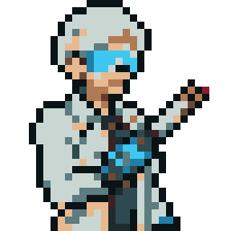
ケイロン医療研究所から脱走した外科医。神経・骨格・知能インプラントは研究所から盗んだ設計図で作る。段階ごとに研究所の秘密を一つずつ打ち明ける。

企業が捨てたペットロボットやドローンを直して里親に出す少女。上層の試作品まで直せるようになると、機械にも記憶が残るという手がかりをくれる。
 7
7下層の人々は停止の日より前の路線ごとに集まって暮らした。だからこの都市のギルドは「ライン」だ。エンブレムは路線の色と番号を付けた駅の標識、ギルドの硬貨は昔の地下鉄トークンだ。毎週ECHOは無人の鎮圧列車を1号から送り込む。ラインの乗務員が一緒にダメージを重ねて1両を止めると、さらに硬い次の列車がすぐに下りてきて、最後の10号「終着駅」まで続く。ライン加入は種族に関係なく開かれており、路線無線で乗務員同士が話し、トークンショップでチップパックなどの補給品と交換する。


1日2〜5分のぞくだけで十分。キャラクターは勝手にギャングと戦い、接続していないあいだもコインがたまる。あなたの仕事は、武器商と取引し、装備をそろえ、どんな姿で次の区域へ入るかを選ぶことだ。


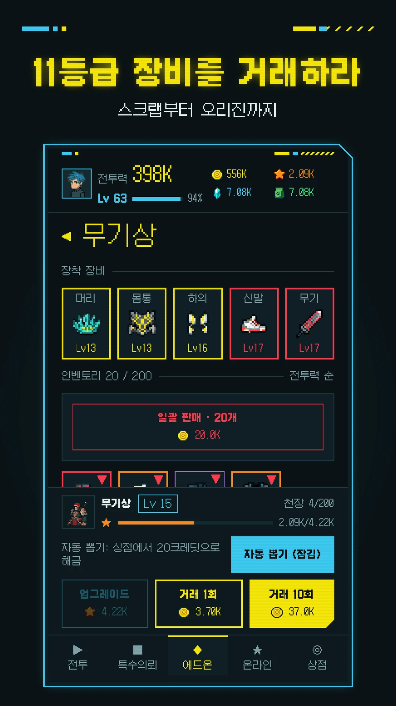


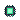
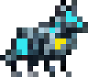

ゲームのキャラクターは縦横24ピクセル。基本ボディの上に装備のレイヤーを重ね、等級の色と肌の色を塗って1枚にする。下のラボはゲームと同じ絵、同じ順番で描く。
数字は装備の等級。同じ等級の中にも外見がいくつもあり（アイテムLv26以上は上位外見5種が加わる）、「外見」ボタンで切り替えられる。外見は能力値と確率に影響しない。
特定の外見をそろえて着ると隠されたセットが発見され、セットごとに小さな効果と専用プロフィールが解放される。セットをタップするとラボで着せられる。
浮浪者、レジスタンス、市民から一つを選ぶと7カットのイントロが流れ、1区域ラスト下水道で最初の戦闘が始まる。
戦闘は自動。ウェーブを越えてボスを倒すと次のステージへ進む。アプリを閉じていたあいだのコインも戻ったときに受け取れる。
集めたコインで武器商バレルから装備を買う。武器商のレベルを上げるほど高い等級が解放され、Lv21・25・29でクォンタム、ヴォイド、オリジン等級が順に解放される。
より強い装備を着ると戦闘力が上がり、見た目も変わる。余った装備は売却するか分解する。
レベルが上がると0番ホームの商人たちとラインが順に扉を開く。初めて入るメニューごとに案内ドローンが道を教えてくれる。
特殊依頼5種はそれぞれ1日3回、無料ボックスとプレイ報酬は毎日午前9時に新しく開く。ピットの週間順位と鎮圧列車は毎週リセットされる。
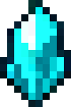
クロームサイボーグから剥がした金属。施術の材料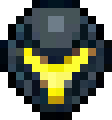
6 プロトタイプケイロン研究所の試作品。オレンジの回路線 ギャング金庫襲撃コインを奪ってくる
ギャング金庫襲撃コインを奪ってくる 解決屋の依頼名声を得る
解決屋の依頼名声を得る サイボーグ廃棄場クロームを集める
サイボーグ廃棄場クロームを集める 補給トラック強奪ケイロンのトラックを止めて食料を分ける中継サーバーハッキング廃駅のサーバーに侵入してチップを抜き出す
補給トラック強奪ケイロンのトラックを止めて食料を分ける中継サーバーハッキング廃駅のサーバーに侵入してチップを抜き出す
武器商の取引とペット・インプラントのガチャには確率型アイテムがある。等級ごとの確率と天井（確定獲得）のルールは、ゲーム内の「確率情報」ですべて確認できる。同じ等級の中の外見の違いは見た目だけで、能力値と確率は同じだ。
Neon StationはApp Storeで配信中で、iPhone・iPadですぐにダウンロードできる。Android版はGoogle Playでの正式リリースの審査を待っている。リリース情報はお知らせとInstagram @_neon_stationでいち早くお伝えする。初めてならスタートガイドから読んでみよう。
ゲームに入った絵と音、制作規格は「アートファクトリー」という1枚のカタログで管理している。絵や音を一つ変えるとコマンド一つでカタログが作り直され、更新履歴がいちばん上に積み重なる。ここに載っているのはその倉庫の一部だ。


区域ごとに構成員3種、精鋭、幹部、ボスまで6種ずつ、全部で60種の敵がいる。


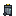

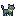


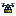
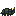


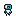

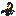

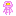


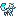
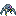


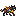
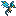


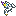


等級ごとに5種、全部で55種。低い等級は路地で拾ったスクラップ機械、中間は軍と企業の廃棄品、クォンタム・ヴォイド・オリジンは上層の向こうから来たものだ。


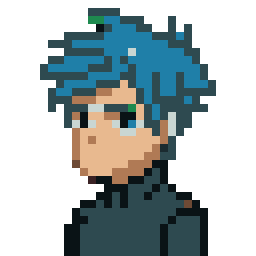
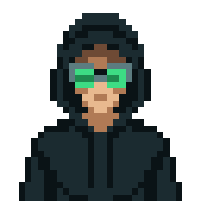
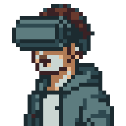


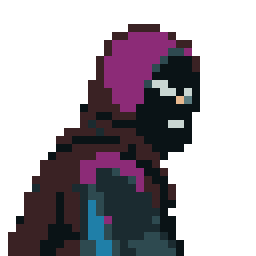


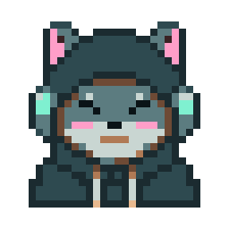


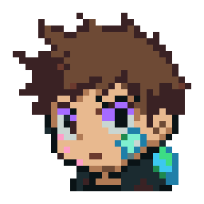
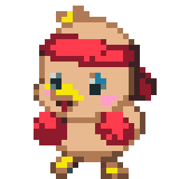
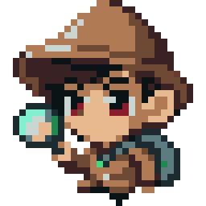


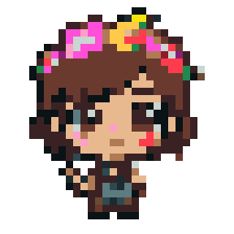


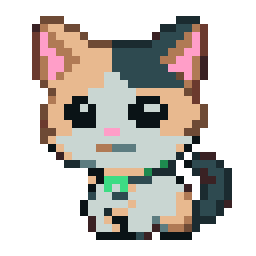

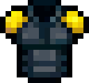
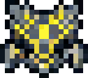
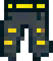
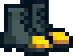
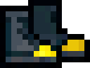
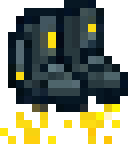
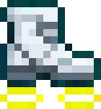
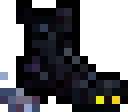
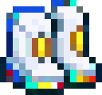


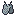


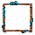


BGMと効果音は、AI音楽サービスや音源サイトではなくコードで直接合成した。波形を一つずつ計算して作ったチップチューンなので、著作権の心配なく使える。ゲームにはBGM10曲、効果音21種が入っている。バトルタブでは4曲のうち1曲がランダムで流れる。
バトルタブのランダム4曲のうち1曲（1.1.0）、そのほかの画面（ショップ・依頼・プロフィール・チャット）
バトルタブの通常狩り
バトルタブのランダム4曲のうち1曲（ほかのタブから［バトル］を押すたびに選び直す）
バトルタブのランダム4曲のうち1曲
バトルタブのランダム4曲のうち1曲
ボス待機・ボス戦、特殊依頼の戦闘、PVP（入るたびに最初から）
アドオン（ハブ・武器商・インプラント・ペット・パレットビルダー、ラインを除く）
アドオン › ライン（路線・トークンショップ・乗務員・路線無線）
ライン › 鎮圧列車タブ（入るたびに最初から）
PVPタブ（週間順位・相手選び）
| アセット | サイズ（ピクセル） | メモ |
|---|---|---|
| 装備の等級 | 11段階 | クォンタム（ミント）、ヴォイド（紫）、オリジン（白）がシンギュラリティの上に加わった。強調マスクを等級の色で塗る |
| キャラクターの基本ボディ | 24 × 24 | 種族3種 × 姿勢2（待機、構え）。装備は同じサイズのレイヤーで重ねる |
| 装備レイヤー | 24 × 24 | 絵 + 強調マスク（等級の色）+ 肌マスク（手が見える部位のみ） |
| 通常の敵 | 24 × 24 | 待機と攻撃の2枚 |
| ボス、鎮圧列車 | 52 × 52 | 区域ごとに1種、列車3種 |
| ペット | 16 × 16 | 等級色の強調マスクを含む |
| 区域の背景、イントロのカット | 256 × 112 | 画面では背景の1ドットを2dpで描く |
| 商人、プロフィール肖像 | 256 × 256 | 商人3人 × レベル5段階、プロフィール204枚 |
| セットのオーラ | 36 × 36 | セットごとに3フレーム、体を包む光と足元のリング |
| フォント | Galmuri 11·14, Fusion Pixel 12 | SIL OFL 1.1。中国語・日本語版はFusion Pixel。ドットが崩れないよう整数倍のサイズでのみ使う |
企画、開発、アーティスト、サウンド担当、運営がすべて一人。データ分析コンサルタントがAIを同僚として、アイデアから二つのストアでのリリース準備まで歩んできた過程をそのまままとめた。
ペット育成のWebプロトタイプで感触を確かめたあと、サイバーパンク放置RPGへと方向を広げた。ゲーム企画書、開発環境、デザインシステム、画面モックアップ6枚を1日で作った。
通貨と特殊依頼、商人の構造を組み、45日間のバランスシミュレーションを回した。装備の外見を大量に作る自動工程を立ち上げた。
名前をNeon Stationに変え、アプリIDを確定した。ペット16種、チップチューンのBGMと効果音、チャット、商人の肖像を入れ、アートファクトリーを作った。
Supabaseサーバーをつなぎ、オンラインPVPと週間シーズン、チャットを開いた。敵60種と背景10枚をそろえ、ストーリーバイブルを書いた。
スタイル・セットのシステムと7カットのイントロを実装し、通報・ブロック・アカウント削除などのストアポリシー項目とストア掲載情報を準備した。
Google Playのテストトラックに最初のビルドを上げ、テスターの意見を受け始めた。ギルド「ライン」と鎮圧列車、シグネチャーセット20種、称号112種を入れた。
クォンタム、ヴォイド、オリジンの3等級を加えて装備を11等級に増やし、プレイ時間報酬とアップデートのプレゼントを作った。紹介サイトをneon-station.comで開いた。
チップで育てる16層のスキルツリーと中継サーバーハッキングの依頼、オンラインタブ、英語・中国語版を入れた。iOSの最初のビルドをTestFlightに上げた。
武器商Lv50、クーポン、新しい外見66種、セット30種、バトルBGM3曲、チャットの禁止語を入れた1.1.0でApp Storeの審査を通過し、iOSでリリースした。同じ日にアプリ内決済とアカウント連携を入れた1.1.1を作った。
アイテムレベル、上位外見330種（絵330枚完成）、鎮圧列車の貢献度報酬を入れた1.1.2を準備し、初めて来たランナーのためのスタートガイドとお知らせ掲示板を開いた。
鎮圧列車を10段階に増やし、スキルツリーにインプラント・ペット系統を加えた。ペット55種、セット40種、実績100種を入れ、通貨の変動をサーバーで確認する仕組みを作った。
Google Playの組織アカウントへの切り替えを終え、正式リリースの審査を申請した。1.1.4ではゲストバックアップと復旧コード、クラッシュ収集、日本語版を入れ、紹介サイトも英語・日本語・中国語で公開した。
| アプリ | React Native（Expo）、TypeScript。一つのコードでAndroidとiOS |
| グラフィック | Skiaでドットスプライトを描き、ピクセルがにじまないよう最近傍補間 |
| サーバー | Supabase（Postgres、RLS、Edge Functions）。通貨、ガチャ、順位はサーバーが計算 |
| ビルド | EASクラウドビルド。MacなしでAndroidとiOSを一度に |
| 運営 | PostHogで利用分析、Sentryでクラッシュ収集 |
| アート | PixelLabで生成して選び、レイヤー抽出スクリプトで整理 |
| サウンド | Pythonで合成したチップチューン |
| AIの同僚 | Claude。企画書、コード、検収、ドキュメント作成を一緒に |
一人で作っても実務のように。段階ごとに成果物を決め、関門で続けるか、方向を変えるか、やめるかを判定する。
AIは候補を大量に出す。問題はその次だ。工程を6段階に分け、人がする仕事を1段階に減らした。
開発の過程はBrunchで「AIと作る1人ゲーム開発」として連載している（韓国語）。プレイ動画とアップデート情報はInstagram @_neon_stationに上げる。Brunchで連載を読む
The truth will set you free.
データステーションは、データ分析とAIを教え、コンサルティングする会社だ。2018年から企業や機関で講義を続けてきた。Neon Stationは、その現場で伝えてきたこと、つまり問題を先に定義し、道具はそのあとで選ぶという原則を、そのままゲーム開発に当てはめてみたプロジェクトだ。